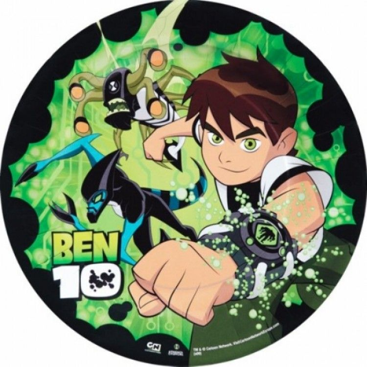

WHO US ?

Ben 10 is a popular American animated superhero franchise created by man of action and produced by Cartoon Network Studios, centering on a boy named Ben Tennnyson
who finds the Omnitrix,a watch-like device that allows him to transform into various alien species.The franchies,which began in 2005,
spans multiple series,films,and games following Ben's adventures with his cousin Gwen and Grandpa Max.